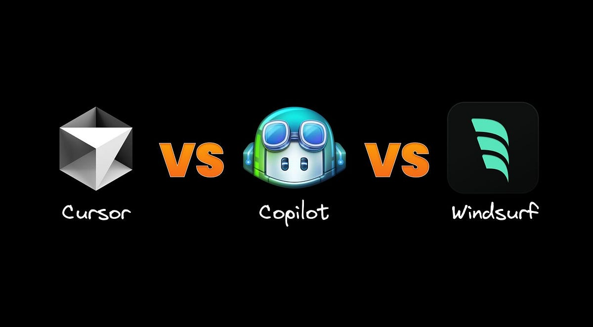
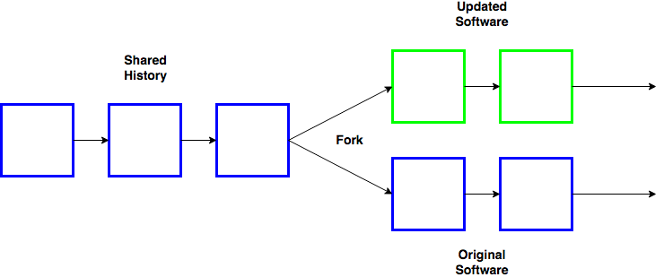
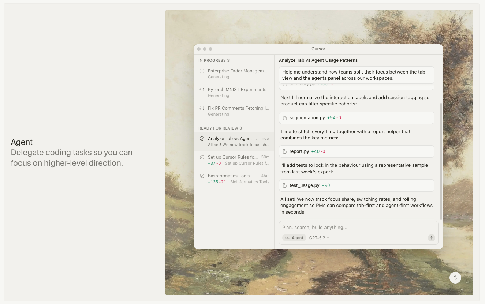

AI Copilots: Claude Code and Cursor#
Duration: 25 minutes reading
Learning Objectives:
Install and verify Claude Code
Understand CLAUDE.md files for project context
Navigate Cursor’s AI-assisted editing
Choose the right tool for each task
The AI Development Stack#
Modern AI-assisted development involves multiple tools, each optimized for different workflows:
Tool |
Interface |
Best For |
|---|---|---|
ChatGPT/Claude.ai |
Web chat |
Exploration, research, one-off questions |
Claude Code |
Terminal |
Multi-file operations, git workflows, codebase navigation |
Cursor |
IDE |
In-editor completion, refactoring, file editing |
GitHub Copilot |
IDE |
Line-by-line autocomplete |
This course emphasizes Claude Code and Cursor because they represent the cutting edge of AI-powered development—moving beyond autocomplete to true agent-style assistance.
The AI Code Editor Wars#
The AI-assisted coding landscape has undergone dramatic shifts since GitHub Copilot launched as the first major product in this space. Understanding this history helps explain why we focus on Cursor and Claude Code rather than Copilot.

The three major AI-native code editors: Cursor, VS Code (with Copilot), and Windsurf. All share VS Code’s interface because Cursor and Windsurf are forks of VS Code.
GitHub Copilot: The First Mover#
GitHub Copilot launched in preview in June 2021 and became generally available in June 2022. As the first AI coding assistant to reach mainstream adoption, it established the category and still commands significant market share with over 20 million users.
Copilot was built as a VS Code extension—a strategic choice that let it reach developers where they already worked. But this decision came with hidden constraints.
Why Extensions Hit a Ceiling#
VS Code’s extension API was designed for syntax highlighting, linting, and similar add-ons—not for AI agents that need deep editor integration. As AI capabilities advanced, extension developers discovered what they couldn’t do:
No inline editing UI: Features like Cmd+K to edit selected code inline aren’t possible through the extension API
No multi-file orchestration: Extensions can’t coordinate edits across files with native diff previews
No terminal interception: An extension can’t capture terminal output to learn from test failures
No shadow workspace: Extensions can’t run speculative edits in the background before showing them
A Cursor developer explained the fork decision directly:
“We tried to build Cursor as a VS Code extension for about 3 months. We got some things working but eventually realized that the features we wanted to build just aren’t possible as extensions. Things like Cmd+K, Composer, and our approach to Tab just aren’t possible with VS Code’s extension API.”
The Fork Strategy#

A software fork creates a complete copy of the original codebase. The forked project can then evolve independently, adding features that wouldn’t be possible as an add-on.
In 2022, a team of MIT students founded Cursor and made a bold architectural choice: rather than build an extension, they forked VS Code entirely. This meant copying VS Code’s entire codebase and modifying it directly.
Forking gave Cursor access to VS Code’s internals:
Native diff rendering: Changes appear in VS Code’s built-in diff viewer
Shadow workspace: The agent can try edits before committing them
Terminal integration: Cursor can capture command output and react to failures
Repository-wide indexing: Semantic understanding of the entire codebase
The tradeoff? Cursor must continuously merge VS Code updates—substantial engineering overhead. But the product differentiation has proven worth it.
The Business Outcome#
The market rewarded this architectural bet:
Cursor: Reached $100M ARR within 12 months of launch—reportedly the fastest-scaling SaaS product ever
Windsurf: Another VS Code fork, acquired by OpenAI for $3 billion in early 2025
Copilot: Losing enterprise accounts; Goldman Sachs reportedly reduced Copilot spending in favor of alternatives
The lesson: when building AI-powered tools, architectural decisions made years earlier can become competitive advantages or liabilities. Extensions optimize for easy adoption; forks optimize for capability depth.
Claude Code: Terminal-Based Agent#

Claude Code runs directly in your terminal, providing agent-style assistance with full access to your filesystem and shell.
Claude Code is Anthropic’s official terminal agent for software development. It operates in your shell, has access to your filesystem, and can execute commands—making it ideal for:
Multi-file refactoring
Git operations
Running tests and interpreting results
Codebase exploration
Setting up development environments
Installation#
# Install via npm (requires Node.js 18+)
npm install -g @anthropic-ai/claude-code
# Verify installation
claude --version
# Start Claude Code
claude
You’ll need an API key from the Anthropic Console. Set it as an environment variable or enter it when prompted:
export ANTHROPIC_API_KEY="sk-ant-..."
Basic Commands#
Once inside Claude Code:
Command |
Action |
|---|---|
Type naturally |
Ask questions, request changes |
|
Show available commands |
|
Clear conversation history |
|
Show token usage and costs |
Ctrl+C |
Cancel current operation |
Example session:
You: What files handle authentication in this project?
Claude: Let me search the codebase...
[Uses grep and file reading tools]
I found authentication logic in these files:
- src/auth/login.py (main login flow)
- src/auth/jwt.py (token handling)
- src/middleware/auth_middleware.py (request validation)
Would you like me to explain any of these in detail?
How It Works#
Claude Code uses the ReAct pattern we’ll study in depth later:
Reason: Claude interprets your request
Act: Executes tools (read files, run commands, edit code)
Observe: Examines results
Repeat: Continues until the task is complete
This is fundamentally different from autocomplete—Claude Code is an autonomous agent that can navigate your codebase, run tests, and modify multiple files to accomplish a goal.
CLAUDE.md: Project Context Files#
The most important file for Claude Code effectiveness is CLAUDE.md—a markdown file at your project root that provides context about your codebase.
What to Include#
A good CLAUDE.md contains:
# Project Name
Brief description of what this project does.
## Quick Start
How to run the project, install dependencies, etc.
## Directory Structure
Overview of important directories and their purposes.
## Key Conventions
- Coding style preferences
- Testing approach
- Git workflow
## Common Tasks
- How to add a new feature
- How to run tests
- How to deploy
Example: FINM Course Repository#
The course examples repository includes a CLAUDE.md:
# Claude Instructions
This repository contains in-class examples for FINM 33200.
Examples should be self-contained, runnable, and suitable
for in-class demonstration.
## Directory Structure
Organized by topic at the top level, with numbered
subdirectories (01_, 02_, ...) progressing from simple
to complex.
## Environment Variables
Copy .env.example to .env at repo root and fill in values.
Examples load from there using python-decouple.
This tells Claude Code how the project is organized, how to handle environment variables, and what conventions to follow when creating new examples.
CLAUDE.md Hierarchy#
Claude Code reads CLAUDE.md files at multiple levels:
Project root (global context)
Subdirectories (specific overrides)
This lets you maintain general conventions at the root while customizing behavior for specific modules.
Cursor: AI-Native IDE#

Cursor’s Agent mode (formerly Composer) provides a chat interface for multi-file edits with full codebase awareness.
Cursor is a fork of VS Code with deep AI integration. It provides:
Tab completion: Context-aware code suggestions
Cmd+K: Inline editing with natural language
Composer: Multi-file edits in a chat interface
@ references: Point to specific files, docs, or web pages
Installation#
Download from cursor.sh. It imports your VS Code extensions and settings automatically.
Key Features#
Tab Completion Cursor predicts what you’ll type next, showing suggestions as you code. Accept with Tab, reject by continuing to type.
Cmd+K (Inline Edit) Select code, press Cmd+K, describe what you want:
“Add error handling”
“Refactor to use async/await”
“Add type hints”
Cursor shows a diff preview before applying changes.
Composer (Cmd+I) Multi-file chat interface for larger changes:
“Add a new endpoint for user authentication”
“Refactor the database layer to use SQLAlchemy”
“Write tests for the trading module”
@ References In any prompt, use @ to include context:
@src/auth/login.py- Include a specific file@docs- Include documentation@web- Search the web for context
Cursor Rules#
Like CLAUDE.md for Claude Code, Cursor uses a .cursorrules file for project-specific instructions:
You are an expert Python developer working on a quantitative finance project.
Conventions:
- Use type hints on all functions
- Prefer pandas for data manipulation
- Use pytest for testing
- Follow PEP 8 style guide
When writing financial code:
- Always handle missing data explicitly
- Use decimal for currency calculations
- Include docstrings with parameter descriptions
When to Use Which Tool#
Task |
Recommended Tool |
|---|---|
Quick question about code |
Claude Code or Cursor Composer |
Edit a single function |
Cursor Cmd+K |
Multi-file refactoring |
Claude Code or Cursor Composer |
Running tests and fixing failures |
Claude Code |
Git operations (commit, PR) |
Claude Code |
Line-by-line autocomplete |
Cursor Tab |
Exploring unfamiliar codebase |
Claude Code |
Prototyping in a notebook |
Cursor |
The General Pattern#
Use Claude Code when:
You need shell access (git, pip, pytest)
The task involves multiple files
You want to describe an outcome, not specific edits
You’re exploring or debugging
Use Cursor when:
You’re actively editing in the IDE
You want inline suggestions while typing
You need visual diff previews
You’re working on a single file
Hands-On Exercises#
Exercise 1: Verify Claude Code Installation#
# Start Claude Code
claude
# Ask it to describe your current directory
You: What files are in this directory?
# Ask it to create a simple Python script
You: Create a hello.py file that prints "Hello from Claude Code"
Exercise 2: Create a CLAUDE.md#
Navigate to a project directory and create a CLAUDE.md:
claude
You: Create a CLAUDE.md file for this project. Include:
- What the project does (based on the files you see)
- How to run it
- Key conventions to follow
Exercise 3: Cursor Inline Edit#
Open a Python file in Cursor
Select a function
Press Cmd+K
Type “Add comprehensive error handling”
Review the diff and accept/reject
Exercise 4: Compare Tools#
Try the same task in both tools:
Task: “Add logging to the main function”
Note the different workflows and outputs
Common Patterns#
Claude Code for Git Workflows#
You: Create a commit for the changes I just made
Claude: Let me check the current status...
[Runs git status, git diff]
I see you've modified:
- src/trading/signals.py (added RSI indicator)
- tests/test_signals.py (added RSI tests)
Suggested commit message:
"Add RSI indicator with tests"
Should I create this commit?
Cursor for Refactoring#
Open file in Cursor
Select the code block
Cmd+K: “Extract this into a separate function with proper typing”
Review diff, accept changes
Cursor updates all call sites automatically
Claude Code for Exploration#
You: How does the authentication flow work in this codebase?
Claude: Let me trace through the authentication...
[Reads multiple files, follows imports]
Here's the authentication flow:
1. Request hits /login endpoint (api/routes/auth.py:42)
2. Validates credentials against database (services/auth.py:78)
3. Generates JWT token (services/jwt.py:23)
4. Sets cookie and returns user object
Want me to explain any step in more detail?
Key Takeaways#
Different tools for different tasks. Claude Code excels at multi-file operations and shell tasks; Cursor excels at in-editor assistance.
Context files matter. CLAUDE.md and .cursorrules dramatically improve AI effectiveness by providing project-specific knowledge.
Agents, not autocomplete. Claude Code is a reasoning agent that can autonomously accomplish goals, not just predict next tokens.
Try both. The best workflow often combines tools—Claude Code for setup and exploration, Cursor for detailed editing.
Resources#
Anthropic Console - API keys and billing
Next Steps#
You now have your AI development environment set up. In HW1, you’ll put these tools to work replicating the Lopez-Lira sentiment classification study.